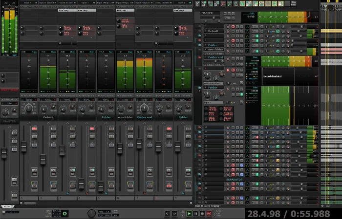

Spel och datorintresserad skåning som hamnat i närke
Anders heter jag och bor i en etta i Hallsberg.
Spelutveckling
Har alltid haft stort intresse för datorer och pysslar gärna med att
lära mig om programmering med inriktning på spelutveckling.
När jag var yngre spelade jag mycket dator och tv-spel på Commodore 64, Amiga
och Nintendo såklart, gillar det fortfarande och spelar en hel del. Senaste
favoriten är Elden Ring som jag kört igenom några gånger.
Det var runt 2010 som jag började bli intresserad av att göra egna spel så jag började leta
runt på nätet och började kolla på tutorials, köpte böcker osv. Har hunnit testa ganska många
olika speltmotorer och programmeringsspråk, här är några av dem:
Förutom att spela spel på så var amigan ett utmärkt verktyg att göra musik med, jag och mina
kompisar satt ofta på helgerna och gjorde låtar tillsammans i musikprogrammet NoiseTracker.
När jag började göra egna spel drog musikintresset igång igen med hjälp av midikeyboard och
DAW (Digital Audio Workstation) på datorn. Gjorde även egna ljudeffekter med Audacity och mikrofon.
Publicerade några enkla mobilspel till android på Google Playstore men de är borta nu eftersom
jag aldrig brydde mig om att hålla dem uppdaterade.

Figur- och brädspel
På senare tid har ett nytt fritidsintresse dykt upp. Några vänner introducerade figurspel som
Mordheim, Warhammer 40k och liknande. Man bygger och målar sina figurer och modeller själv som man
sedan använder i matcher mot varandra.
Vi spelar även brädspel av lite mer avancerat slag som tillexempel Endeavor: Age of sail, City of kings,
Small World och Zombiecide. Träffas två eller tre lördagar i månaden och spelar, laga mat och snackar
om allt möjligt.